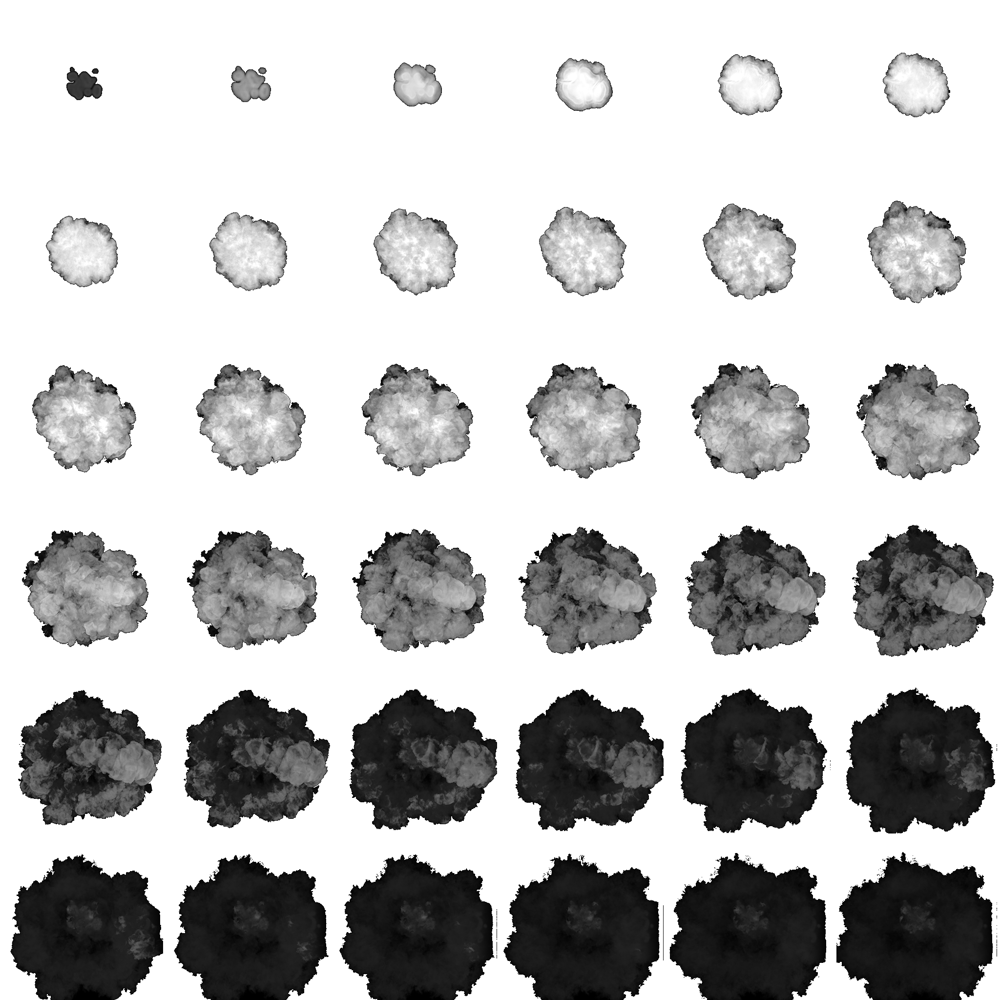

This is the development blog for our project in DH2323 Computer Graphics and Interaction
Improved explosion with lighting
May 15th - 2024
One of our set out improvements was to make the explosions also emit light into the world. We also now felt
it was a good opportunity to use what we learned from the smoke and dust additions to improve our explosion
from what we submitted in lab 3. We wanted to create a fiery explosion which also lit up its surroundings.
This may not be how many explosions from tanks look, but it is how they are often presented in movies and it
also presented us with a good opportunity to investigate lighting effects with particles.
Improved Explosion
So the first step was to improve our explosions. We found this tutorial, which used a
component in
the particle systems we had not used yet, Texture Sheet Animation. Instead of using a material with a
texture to display, we now use a material with the texture sheet below. This texture sheet contains several
textures which when played in order animates a small explosion. With the Texture Sheet Animation component
we could now set the system to step through the frames in the sheets during each particle's lifetime.

Upon this animation we now applied a lot of the concepts we used in the previous particle systems in the
project to create the desired effect. We changed the emission to be a series of 5 quick bursts
particles from a half sphere shape. We used color over lifetime to make the particles change color and fade
out over time, etc.
Lighting
Now to make the explosion emit light. Instead of making each particle in the explosion emit light we decided
to create a new particle effect as a child from the explosion. This new particle system was set to only emit
a single stationary particle from an edge at the start of the explosion. We then created a default point
light in the game world and saved it as a prefab before deleting it from the scene.
We then activated the Lights component in the particle system and selected our point light as the light
source. We set the ratio of the Light component to 1, unchecked Random Distribution and Size Affects Range
to get a predictable and guaranteed light from our single particle. We used the Use Particle Color on the
lights component with a color over lifetime that went from a light color to fully faded to get a dismissing
light instead of just a light that cut off when the particle despawned.
Smoke from main gun & Recoil
May 14th - 2024
The dust from driving was derived from a smoke effect, we thought it would be easy to make a copy of it and
modifying to create a burst of black smoke instead. The problem arose when we altered the color to black
instead of dark brown. We used an additive particle shader in unity, which we learned meant that black was
counted as nothing, meaning making the smoke black made it invisible.
The fix was to create a new material with a multiplicative shader instead of an additive, but now we also
had to find a new dust texture as the one from the first tutorial had a black background. We found this free asset and used one of
its frames as the new texture, as it used a transparent background instead.
With our new material we could now produce black smoke, so we started modifying the particle system to
produce the burst of smoke from firing the shell instead of dust from driving. The emission was made to be a
burst of particles, and the shape was made to a narrow cylinder much like the barrel.
We wanted the particles to simulate gases rushing fast out of the barrel but being slowed down by the
surrounding air when exiting. This was achieved by using the Limit Velocity over Lifetime modifier. We set
the initial speed to 1 and added a dra factor of 5. This created smoke that was faster in the beginning, but
gradually slowed down to a halt in its short lifespan.
In difference to the sand dust particles, we did not want these particles to move with the tank, but stay
where they were emitted. There would also not be smoke created in every frame, so based on this we opted to
use the same method of instantiating that’s used in the lab to create the explosions. We added a reference
to this new smoke burst particle system to the ShellEmitter script and instantiated it at the same position
as the shell in the direction of the turret when the gun fired.
Lastly, we also wanted the force from firing the shell from the main gun to impact the tank, and to achieve
this we used Unity’s physics engine. We used GetComponentInParent to get the RigidBody of the tank and used
AddForce with the Impulse mode in the opposite direction of the fired shell. We used the same variable
m_CurrentLaunchForce which was used to launch the shell to get a varied recoil based on how long the mouse
button was held down, but scaled the force down to just give the tank a little nudge in the recoil
direction.
Dust from driving
May 14th - 2024
To make the effect of sand being kicked up into a dust cloud when driving on the dunes, we use particles.
Most online material regarding smoke clouds focuses on a more cartoon-like aesthetic. We wanted a more
realistic style, so we started by following this
tutorial to get a smoke-like effect.
We took the results of this tutorial and started modifying it to represent a burst of dust instead. We
changed the color of the particle material to a darker brown color to make it look like sand and changed the
shape to a donut to get a more even distribution. We changed the emission from being a looped steady
emission to a single burst of particles without looping. We also slightly altered the rotation, speed, and
other factors set in the tutorial.
The plan was to instantiate a couple of these bursts of dust while driving, in the same manner that the
explosion from the shell was instantiated on impact. We added code in the TankController script to create a
dust particle at each wheel when movement input was detected. This worked okay for the main tank, so we
added it to the enemy tanks as well. This is where problems arose.
We created these particle system objects for each frame, for each tank. Using particles this way, creating
this many new particle effect game objects every frame made the framerate drop to unplayable levels. So it
became clear we needed to change our approach.
We went back to the particle system having a 1s-long looping duration, with a rate over time of 300
particles instead of a burst. We now added one of these particle systems to each wheel in the tank prefab.
In the TankController script we now collected these particles in a list, and instead played or stopped the
particle systems based on the tank was moving or not. We also added the particle systems to the enemy tanks,
but since they are always moving, we let the particle system play on awake and never controlled it with any
script.
Updated specification
May 9th - 2024
Based on feedback from our initial project specification, we have decided to make smaller changes and larger
clarifications to our project idea. As most of the tank was animated in the lab, we decided to lean into the
particle and light effects.
This was written down with a background, problem statement, and thoughts on how we would implement these changes
into a document. This document can be viewed here.
Intial project idea and specification
April 30 - 2024
Our idea for the project was to extend the work we did in animation track lab 3, to make the entire scene more
dynamic.
As our initial project specification, we decided to include: